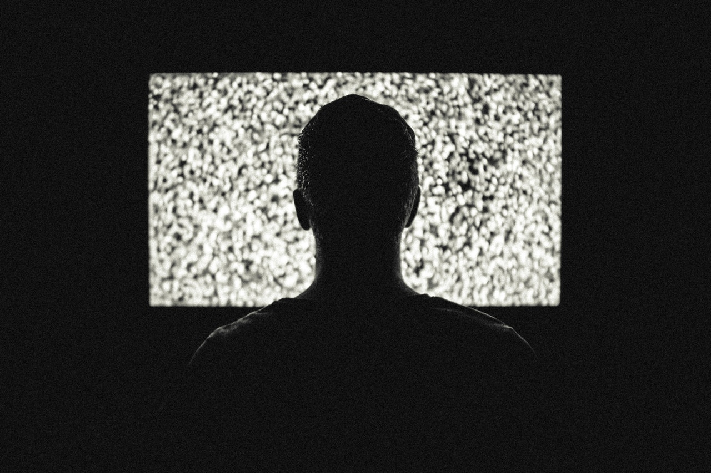

The TV has had and still has a big impact on society, especially on the way we spend our free time. A lot of critics believe the TV takes to much free time, making us not do enough of other activities such as exercise and talking, therefore lowering our skills in these areas and maybe even being a reason for mental diseases such as anxiety and depression. But it's not only our social skills, a lot of people's personal opinions on for example politics is heavily pending on information from medias like TV.
But it's not only bad, the television gives us information about things such as events and people. It lets us know when something happen. It also gives a form of entertainment cheering up our lives.
